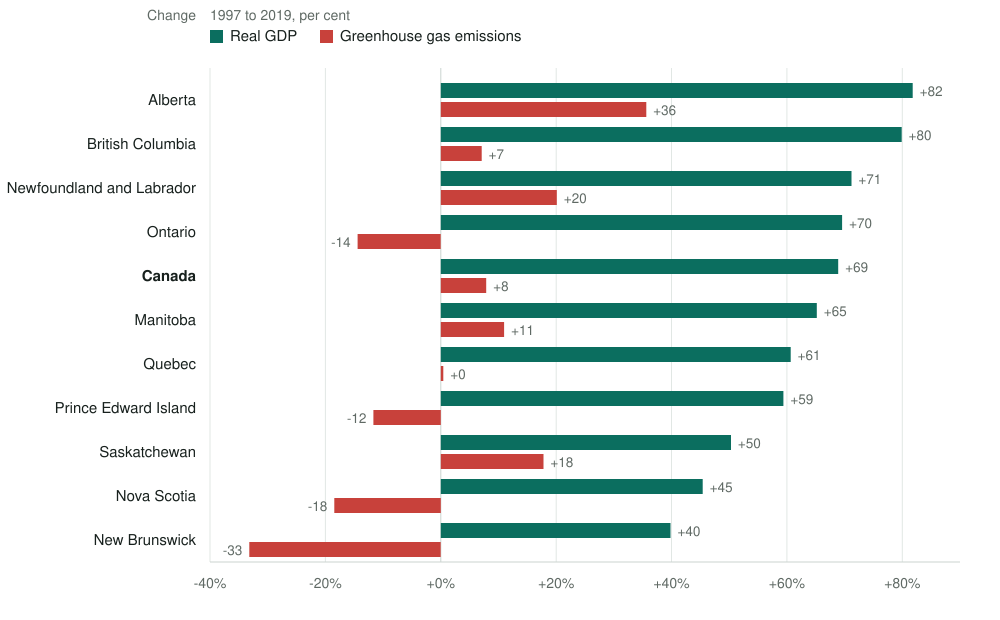

Emissions, energy use and growth across Canadian provinces
Whether greenhouse gas emissions, industrial energy use and real GDP are tied together over the long run in each Canadian province, and whether any of them helps predict the others. Eleven jurisdictions, 1997 to 2019, each tested on its own.
An academic project: my own analysis of publicly available data, rebuilt in R from my 2023 Master's project at the University of Saskatchewan. It is not associated with my work for any current or past employer and does not represent their views.

data/processed/panel.csv.The question
Economic growth, energy use and greenhouse gas emissions are bound together, but how tightly, and does the answer depend on where you look?
Most of what is known comes from national studies: Canada is treated as one economy and a single answer comes out. But Canada is not one economy. A province built on oil sands and a province built on hydroelectricity and manufacturing have little in common beyond a currency. This study asks whether the national answer survives when you look underneath it.
What it finds
- The national relationship does not decompose. A long-run relationship shows up for Canada as a whole on one test, but not in most of the provinces that make up Canada. The country's answer is not the average of its parts.
- The provinces where you would most expect a link are where it is weakest. Ontario is the only jurisdiction where both cointegration tests agree; Alberta and Saskatchewan are among those where neither finds one. The likely reason is that their output is driven by oil prices, and the 2008 crash and the 2014-16 price collapse moved their GDP violently without moving physical emissions in step. Ontario's path was shaped instead by a coal phase-out completed in 2014 and a long manufacturing decline, which moved emissions, energy and output together.
- Emissions do not predict economic growth anywhere. Not in any province, not nationally, under every specification tested. This is the most robust finding here.
How it was tested
All variables in natural logarithms. Each jurisdiction is treated as its own time series and tested separately, with no cross-sectional pooling.
| Test | What it asks | What it found |
|---|---|---|
| ADF unit roots | Whether each series carries a stochastic trend | Every series is non-stationary in levels, and 27 of 33 are stationary after first differencing, confirming the I(1) finding the cointegration tests rest on |
| Engle-Granger | Whether emissions, GDP, GDP squared and energy use share a long-run equation | Cointegration at the national level and in Ontario |
| Johansen trace | How many long-run relationships the three-variable system supports | Cointegration in five of ten provinces. The squared term cannot enter a linear VAR, so the two tests examine different specifications, which is why they disagree |
| Granger causality | Whether one series helps predict another | 13 of 77 tests significant at 5%; 3 survive a correctly augmented Toda-Yamamoto test |
| Breusch-Godfrey and Breusch-Pagan | Whether the residuals misbehave | No jurisdiction shows heteroskedasticity at the 10% level. The autocorrelation the original analysis worried about looks like an artifact of its lag order |
How much to believe
Each jurisdiction supplies 23 annual observations. That is a short series for this kind of econometrics, and it shows up everywhere in the results.
- The cointegrating rank, the formal measure of how many long-run relationships exist, changes with the choice of lag order in ten of the eleven jurisdictions. The results are therefore reported at lag orders 2, 3 and 4 rather than at a single chosen one.
- The standard criteria for making that choice disagree completely: AIC picks the largest option almost everywhere, Schwarz the smallest.
- Canada returns full rank at every lag order tested. Full rank means a stationary system, which is not cointegration, so the national claim rests on Engle-Granger alone.
- Of 77 causality tests, 13 are significant as originally reported and 3 survive augmentation.
The fragility is not a footnote, it is part of the finding: provincial relationships cannot be read off national estimates, and 23 years of annual data cannot settle them either.
Reproducing the original analysis
The original work was done in Stata for a Master's project. The do-files ran from temporary directories and did not survive, so the analysis was rebuilt in R from the surviving dataset, with each test diffed against the results the thesis reported.
Every statistic reproduces except two Johansen trace values: all 66 ADF statistics, all 11 Engle-Granger statistics, all 77 causality p-values and both diagnostic tests. The specification behind each test had to be recovered by search, since the thesis states none of them. The two exceptions, in New Brunswick and Prince Edward Island, do not reproduce under any specification tried; the New Brunswick figure also sits against the wrong critical value in the source workbook, which suggests a transcription slip.
Re-examination changed some conclusions. The original causality tests were not augmented, so their p-values do not have their nominal distribution; under a proper Toda-Yamamoto test 12 of the 77 conclusions change. The headline claim, that emissions do not predict GDP in any jurisdiction, holds under both.
What this is not
This is a study of statistical relationships: whether series move together over time, and whether one helps predict another. It is not a measurement of how much emissions respond to growth, and causality here means predictive precedence in a technical sense, not physical causation. Nobody doubts that burning fuel emits carbon. The question is whether 23 years of provincial accounts can show it.
Data and reproduction
Real GDP and industrial energy use from Statistics Canada, and greenhouse gas emissions from Environment and Climate Change Canada; 11 jurisdictions by 23 years, complete. Source table identifiers are recorded in the repository's provenance file.
Analysis in R 4.6.1 with 73 packages pinned through renv. The site is built by Quarto, whose pre-render step runs the full analysis, so the published pages cannot drift from the code that produced them. Generated result tables are tracked in the repository, so a diff after a run works as a regression test. Code under the MIT licence; the data are redistributed under the Statistics Canada Open Licence and the Open Government Licence - Canada.